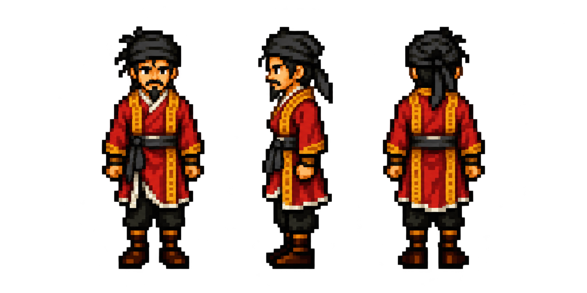

Lin Chong · Classic style
Front · Left · Back. Matched to the approved Song Jiang Classic style, using Lin Chong's portrait for his identity and clothing.
Song Jiang · Approved Classic reference

Generated with the built-in image tool. Original colours preserved. Standing design study.